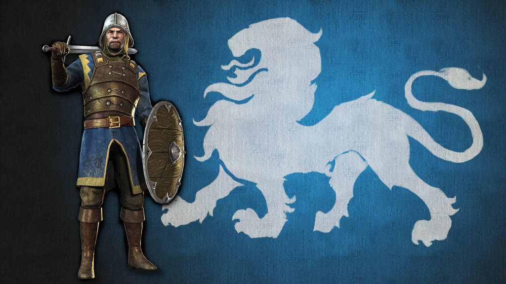
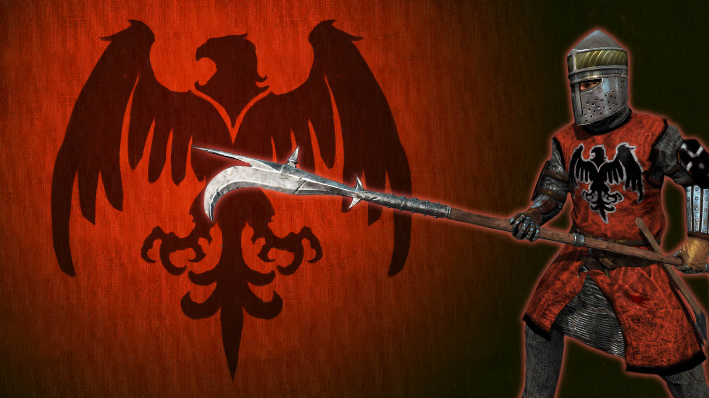

Fraktionen
Agatha
 Der Agatha Orden sind Ritter, die noch immer loyal für Danum Argon, den Neffen von König Alfonso Argon, kämpfen. Sie bekämpfen Malric und den Mason Orden um den Friede zu erhalten. Die Ritter des Agatha Ordens sind bekannt für ihre loyalität und ihren Adel. Sie kämpfen fair und mit Ehre.
Die Prinzipien des Agatha Ordens:
- Respektiere deinen Gegener
- Stirb mit Tapferkeit
- Beschütze die Schwachen und Unschuldigen
- Handel im Interesse deines Königs
- Lobe die Götter für ihre Gaben
Der Agatha Orden kennzeichnet sich mit den Farben Blau und Gold. Ihr Wappenzeichen ist ein Löwe.
Mason
 Der Mason Orden ist auch bekannt als "Die eiserne Faust" oder als "Der Orden". Der Mason Orden wurde erst vor kurzem von Malric Terrowin gegründet. Der Mason Orden will das Land wieder aufbauen und die Ritter der Agatha stärker machen. Nach dem Einmarsch und dem Tod von König Alfonso Argon, wollte Malric an die Macht. Sein Orden begann schnell zu wachsen, obwohl der Orden der Mason unbeliebt war und die Menschen Angst vor einem weiteren Einmarsches von Tenosia hatten. Der Orden glaubt daran, dass oft Menschen für etwas Größeres geopfert werden müssen.
Das Glaubensbekenntnis des Mason Ordens:
- Es ist rühmlich durch das Schwert zu sterben.
- Die Schwachen sollen den Starken dienen
- Der Wert eines Mannes hängt von seiner Kompetenz ab
- Man darf behalten, was man tötet
- Veränderung ist nötig für Verbesserung
- Gnade auf dem Schlachtfeld ist für die Schwachen
- Der, der Weg rennt, lebt noch einen Tag
Ritter des Mason Ordens werden durch die Farben Schwarz und Rot gekennzeichnet. Schwarz soll den Schatten darstellen und Rot das Blut. Als Wappen haben sie einen schwarzen Adler.